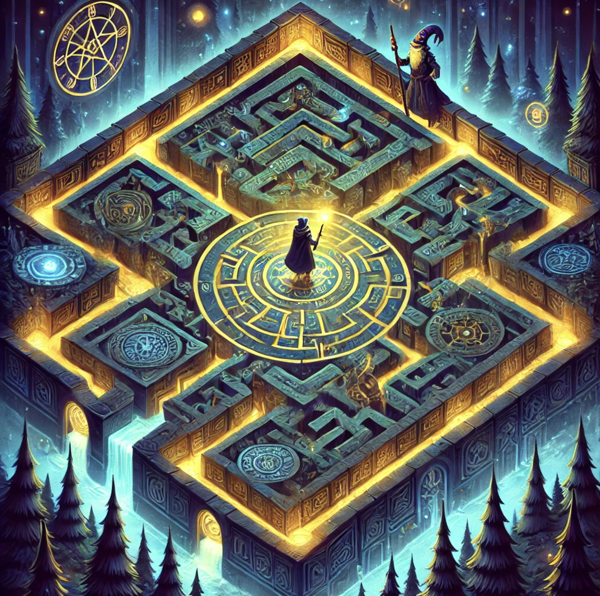

<!DOCTYPE html PUBLIC "-//W3C//DTD HTML 4.01 Transitional//EN" "http://www.w3.org/TR/html4/loose.dtd">
<html>
<head>
  <title>Interactive Fiction — Source</title>
  <meta http-equiv="Content-Type" content="text/html;charset=utf-8" />
  <meta name="author" content="Ryan duSaire" />
  <meta name="description" content="A page for the game DGAH220-ExerciseOne by Ryan duSaire." />
  <link rel="stylesheet" href="style.css" type="text/css" media="all" />
 </head>

<body>

<div class = "container">

<div class ="sourcecoverimage">
	<span></span>
</div>

<div class ="sourceintroduction">
	<h1>
			<span>Interactive Fiction</span> <span class="pagination">— 1 of 1</span>
	</h1>
	<h2>
		<span>Ryan duSaire</span>
	</h2>
	<div class ="sourcebibliography">
		<span>Release 1</span>
	</div>
</div>

<div class = "links">
<ul>
<li><a href="indexIF.html">Home page</a></li><li><a href="source.txt">Complete text</a></li>
</ul>
</div>

<div class = "source">
<p class="indent0"><span class="heading">&quot;<span class="quote">DGAH220-ExerciseOne</span>&quot; by Ryan duSaire</span></p><p class="indent0">When play begins: say &quot;<span class="quote">Maze</span>&quot;</p><p class="indent0">The story headline is &quot;<span class="quote">Escape</span>&quot;.</p><p class="indent0">The story description is &quot;<span class="quote">Find the exit to the maze</span>&quot;</p><p class="indent0">Release along with an Interpreter, a website, and the source text.</p><p class="indent0">Chapter 1 - The Beginning</p><p class="indent0">The Maze is a region. </p><p class="indent0">The Start, First Nameless Room, Second Nameless Room, Third Nameless Room, Fourth Nameless Room, </p><p class="indent0">Fifth Nameless Room, Sixth Nameless Room, Seventh Nameless Room, Eighth Nameless Room, </p><p class="indent0">Ninth Nameless Room, Tenth Nameless Room, Eleventh Nameless Room, Twelfth Nameless Room, </p><p class="indent0">Thirteenth Nameless Room, Fourteenth Nameless Room, Fifteenth Nameless Room, </p><p class="indent0">Sixteenth Nameless Room, Seventeenth Nameless Room, Eighteenth Nameless Room, </p><p class="indent0">Nineteenth Nameless Room, Twentieth Nameless Room, Twenty-First Nameless Room, </p><p class="indent0">Twenty-Second Nameless Room, and Twenty-Third Nameless Room, and End are in the Maze.</p><p class="indent0">The Start is a room. The printed name of the Start is &quot;<span class="quote"></span>&quot;.</p><p class="indent0">&quot;<span class="quote">You awaken on a cold, hard floor, the chill biting through your skin. Disoriented, you sit up, the echo of your movements bouncing off the walls around you. To the north, west, and south, solid barriers loom, smooth and impenetrable, offering no chance of escape. The only open path lies ahead, eastward, into the unknown. There is no memory of how you got hereonly the pressing need to move forward, wherever forward might be.</span>&quot;</p><p class="indent0">After looking in a room:</p><p class="indent1">repeat with the notable figure running through people in the location:</p><p class="indent2">if the notable figure is not the player:</p><p class="indent3">say &quot;<span class="quote">[</span><span class="substitution">description of the notable figure</span><span class="quote">][</span><span class="substitution">paragraph break</span><span class="quote">]</span>&quot;;</p><p class="indent0">The Wizard is a person in the First Nameless Room. The description of the Wizard is &quot;<span class="quote">The wizard is clad in flowing robes of blue and silver. He seems both ancient and alert, as if he knows many things that you don't.</span>&quot;</p><p class="indent0">The Wizard can be greeted or ungreeted. The WIzard is ungreeted.</p><p class="indent0">Greeting is an action applying to one thing. </p><p class="indent0">Understand &quot;<span class="quote">greet [</span><span class="substitution">thing</span><span class="quote">]</span>&quot; or &quot;<span class="quote">say hello to [</span><span class="substitution">thing</span><span class="quote">]</span>&quot; or &quot;<span class="quote">say hi to [</span><span class="substitution">thing</span><span class="quote">]</span>&quot; or &quot;<span class="quote">wave to [</span><span class="substitution">thing</span><span class="quote">]</span>&quot; or &quot;<span class="quote">hello [</span><span class="substitution">thing</span><span class="quote">]</span>&quot; or &quot;<span class="quote">hi [</span><span class="substitution">thing</span><span class="quote">]</span>&quot; as greeting. </p><p class="indent0">Check greeting:</p><p class="indent1">if the noun is not the wizard:</p><p class="indent2">if the noun is not the goblin:</p><p class="indent3">say &quot;<span class="quote">There's no point in greeting that.</span>&quot; instead.</p><p class="indent0">Carry out greeting the wizard:</p><p class="indent1">if the wizard is ungreeted:</p><p class="indent2">now the wizard is greeted;</p><p class="indent2">say &quot;<span class="quote">The wizard smiles warmly and inclines his head. 'Greetings, traveler. You arrive at the threshold of a place unlike any other. Prepare yourself for the unexpected.'</span>&quot;;</p><p class="indent1">otherwise:</p><p class="indent2">say &quot;<span class="quote">The wizard is already waiting for your questions.</span>&quot;</p><p class="indent0">Instead of asking the wizard about something when the wizard is ungreeted:</p><p class="indent1">say &quot;<span class="quote">The wizard doesn't respond. Perhaps you should greet him first.</span>&quot;</p><p class="indent0">Understand &quot;<span class="quote">ask [</span><span class="substitution">someone</span><span class="quote">] [</span><span class="substitution">text</span><span class="quote">]</span>&quot; as asking it about.</p><p class="indent0">Understand &quot;<span class="quote">tell [</span><span class="substitution">someone</span><span class="quote">] [</span><span class="substitution">text</span><span class="quote">]</span>&quot; as asking it about.</p><p class="indent0">Understand &quot;<span class="quote">ask [</span><span class="substitution">someone</span><span class="quote">] about [</span><span class="substitution">text</span><span class="quote">]</span>&quot; as asking it about.</p><p class="indent0">Understand &quot;<span class="quote">ask [</span><span class="substitution">someone</span><span class="quote">] about the [</span><span class="substitution">text</span><span class="quote">]</span>&quot; as asking it about.</p><p class="indent0">Understand &quot;<span class="quote">[</span><span class="substitution">someone</span><span class="quote">] [</span><span class="substitution">text</span><span class="quote">]</span>&quot; as asking it about.</p><p class="indent0">After asking the wizard about something:</p><p class="indent1">repeat through the Table of Wizard Responses:</p><p class="indent2">if the topic understood includes topic entry:</p><p class="indent3">say &quot;<span class="quote">[</span><span class="substitution">Response entry</span><span class="quote">][</span><span class="substitution">paragraph break</span><span class="quote">]</span>&quot;;</p><p class="indent3">rule succeeds; </p><p class="indent1">say &quot;<span class="quote">The wizard shrugs. 'I have nothing to say about that.'</span>&quot;;</p><p class="indent0">Table of Wizard Responses</p><p class="indent0">Topic Keywords Response</p><p class="indent0">&quot;<span class="quote">maze/path/secret</span>&quot; &quot;<span class="quote">maze, path, secret</span>&quot; &quot;<span class="quote">The maze is not as it seems. Each path holds a secret, if you have the eyes to see.</span>&quot;</p><p class="indent0">&quot;<span class="quote">danger/warning</span>&quot; &quot;<span class="quote">traps, beware, warning</span>&quot; &quot;<span class="quote">You look brave enough to face the maze, but bewaretraps are everywhere.</span>&quot;</p><p class="indent0">&quot;<span class="quote">history/past/story</span>&quot; &quot;<span class="quote">entered, before, return</span>&quot; &quot;<span class="quote">Many have entered the maze before you. Few have returned.</span>&quot;</p><p class="indent0">&quot;<span class="quote">mystery</span>&quot; &quot;<span class="quote">alive, test, will</span>&quot; &quot;<span class="quote">Some say the maze itself is alive. Others say it's a test of will.</span>&quot;</p><p class="indent0">&quot;<span class="quote">guardian</span>&quot; &quot;<span class="quote">guardian, meet, anger</span>&quot; &quot;<span class="quote">If you meet the guardian within, do not anger it.</span>&quot;</p><p class="indent0">&quot;<span class="quote">goal/treasure/knowledge</span>&quot; &quot;<span class="quote">treasure, knowledge, adventure</span>&quot; &quot;<span class="quote">Do you seek treasure, knowledge, or merely the thrill of adventure?</span>&quot;</p><p class="indent0">&quot;<span class="quote">youth</span>&quot; &quot;<span class="quote">younger, bold, untested</span>&quot; &quot;<span class="quote">You remind me of myself in my younger days, bold and untested!</span>&quot;</p><p class="indent0">&quot;<span class="quote">lost</span>&quot; &quot;<span class="quote">lost, center, key</span>&quot; &quot;<span class="quote">Should you find yourself lost, remember: the center is the key.</span>&quot;</p><p class="indent0">&quot;<span class="quote">exit/escape</span>&quot; &quot;<span class="quote">exit, cunning, clever</span>&quot; &quot;<span class="quote">Even the most cunning maze has an exit, if you are clever enough.</span>&quot;</p><p class="indent0">&quot;<span class="quote">enter/go</span>&quot; &quot;<span class="quote">linger, await, enter</span>&quot; &quot;<span class="quote">Have you not yet entered the maze? You linger here, but the maze awaits.</span>&quot;</p><p class="indent0">&quot;<span class="quote">where/why/how</span>&quot; &quot;<span class="quote">where, why, how</span>&quot; &quot;<span class="quote">The maze is ancient beyond reckoning, its origins lost to time. Some say it was built by a forgotten civilization to guard an unknowable secret. Its impenetrable walls have claimed every life that dared enter, with no soul ever escaping its labyrinthine depths. A unique, arcane key is rumored to be the only means of traversing its passagesa key so rare that its existence is mere legend. Over the centuries, countless adventurers have been lured into its twisting corridors, drawn by whispers of unimaginable treasures. But each who enters vanishes forever, the maze consuming them completely, leaving behind only silence and the haunting sense that something watches, always watches.</span>&quot;</p><p class="indent0">&quot;<span class="quote">clue</span>&quot; &quot;<span class="quote">clue</span>&quot; &quot;<span class="quote">The maze can be forgiving, as long as you don't forget the key.</span>&quot;</p><p class="indent0">Chapter 2 - Lost</p><p class="indent0">The printed name of the Start is &quot;<span class="quote"></span>&quot;. </p><p class="indent0">The printed name of the First Nameless Room is &quot;<span class="quote"></span>&quot;. </p><p class="indent0">The printed name of the Second Nameless Room is &quot;<span class="quote"></span>&quot;. </p><p class="indent0">The printed name of the Third Nameless Room is &quot;<span class="quote"></span>&quot;. </p><p class="indent0">The printed name of the Fourth Nameless Room is &quot;<span class="quote"></span>&quot;. </p><p class="indent0">The printed name of the Fifth Nameless Room is &quot;<span class="quote"></span>&quot;. </p><p class="indent0">The printed name of the Sixth Nameless Room is &quot;<span class="quote"></span>&quot;. </p><p class="indent0">The printed name of the Seventh Nameless Room is &quot;<span class="quote"></span>&quot;. </p><p class="indent0">The printed name of the Eighth Nameless Room is &quot;<span class="quote"></span>&quot;. </p><p class="indent0">The printed name of the Ninth Nameless Room is &quot;<span class="quote"></span>&quot;. </p><p class="indent0">The printed name of the Tenth Nameless Room is &quot;<span class="quote"></span>&quot;. </p><p class="indent0">The printed name of the Eleventh Nameless Room is &quot;<span class="quote"></span>&quot;. </p><p class="indent0">The printed name of the Twelfth Nameless Room is &quot;<span class="quote"></span>&quot;. </p><p class="indent0">The printed name of the Thirteenth Nameless Room is &quot;<span class="quote"></span>&quot;. </p><p class="indent0">The printed name of the Fourteenth Nameless Room is &quot;<span class="quote"></span>&quot;. </p><p class="indent0">The printed name of the Fifteenth Nameless Room is &quot;<span class="quote"></span>&quot;. </p><p class="indent0">The printed name of the Sixteenth Nameless Room is &quot;<span class="quote"></span>&quot;. </p><p class="indent0">The printed name of the Seventeenth Nameless Room is &quot;<span class="quote"></span>&quot;. </p><p class="indent0">The printed name of the Eighteenth Nameless Room is &quot;<span class="quote"></span>&quot;. </p><p class="indent0">The printed name of the Nineteenth Nameless Room is &quot;<span class="quote"></span>&quot;. </p><p class="indent0">The printed name of the Twentieth Nameless Room is &quot;<span class="quote"></span>&quot;. </p><p class="indent0">The printed name of the Twenty-First Nameless Room is &quot;<span class="quote"></span>&quot;. </p><p class="indent0">The printed name of the Twenty-Second Nameless Room is &quot;<span class="quote"></span>&quot;. </p><p class="indent0">The printed name of the Twenty-Third Nameless Room is &quot;<span class="quote"></span>&quot;. </p><p class="indent0">The printed name of the End is &quot;<span class="quote"></span>&quot;.</p><p class="indent0">The First Nameless Room is east of the Start. &quot;<span class="quote">[</span><span class="substitution">if unvisited</span><span class="quote">]You step into the first part of the maze.[</span><span class="substitution">otherwise</span><span class="quote">]Paths lead north, east, west, and south from this familiar chamber.[</span><span class="substitution">end if</span><span class="quote">]</span>&quot;</p><p class="indent0">The Second Nameless Room is north of the First Nameless Room. &quot;<span class="quote">[</span><span class="substitution">if unvisited</span><span class="quote">]The walls seem a little closer here.[</span><span class="substitution">otherwise</span><span class="quote">]From this cold space, you can go south or west.[</span><span class="substitution">end if</span><span class="quote">]</span>&quot;</p><p class="indent0">The Third Nameless Room is east of the First Nameless Room. &quot;<span class="quote">[</span><span class="substitution">if unvisited</span><span class="quote">]A faint hum echoes in this room.[</span><span class="substitution">otherwise</span><span class="quote">]The humming continues as you consider your options: west or north.[</span><span class="substitution">end if</span><span class="quote">]</span>&quot;</p><p class="indent0">The Fourth Nameless Room is south of the First Nameless Room. &quot;<span class="quote">[</span><span class="substitution">if unvisited</span><span class="quote">]There are markings on the floor.[</span><span class="substitution">otherwise</span><span class="quote">]The marked floor points to paths leading north, south, and west.[</span><span class="substitution">end if</span><span class="quote">]</span>&quot;</p><p class="indent0">The Fifth Nameless Room is west of the Second Nameless Room. &quot;<span class="quote">[</span><span class="substitution">if unvisited</span><span class="quote">]The air feels colder in this room.[</span><span class="substitution">otherwise</span><span class="quote">]In this cold chamber, passages open east and west.[</span><span class="substitution">end if</span><span class="quote">]</span>&quot;</p><p class="indent0">The Sixth Nameless Room is west of the Fifth Nameless Room. &quot;<span class="quote">[</span><span class="substitution">if unvisited</span><span class="quote">]You feel like you're being watched.[</span><span class="substitution">otherwise</span><span class="quote">]Under the watchful presence, you can move east or west.[</span><span class="substitution">end if</span><span class="quote">]</span>&quot;</p><p class="indent0">The Seventh Nameless Room is west of the Sixth Nameless Room. &quot;<span class="quote">[</span><span class="substitution">if unvisited</span><span class="quote">]A draft flows through here.[</span><span class="substitution">otherwise</span><span class="quote">]The draft flows between passages to the east and north.[</span><span class="substitution">end if</span><span class="quote">]</span>&quot;</p><p class="indent0">The Eighth Nameless Room is north of the Seventh Nameless Room. &quot;<span class="quote">[</span><span class="substitution">if unvisited</span><span class="quote">]Shadows flicker on the walls.[</span><span class="substitution">otherwise</span><span class="quote">]The flickering shadows reveal a single path south.[</span><span class="substitution">end if</span><span class="quote">]</span>&quot;</p><p class="indent0">The Ninth Nameless Room is north of the Third Nameless Room. &quot;<span class="quote">[</span><span class="substitution">if unvisited</span><span class="quote">]There's a faint scent of flowers.[</span><span class="substitution">otherwise</span><span class="quote">]The floral scent wafts from passages to the south and north.[</span><span class="substitution">end if</span><span class="quote">]</span>&quot;</p><p class="indent0">The Tenth Nameless Room is north of the Ninth Nameless Room. &quot;<span class="quote">[</span><span class="substitution">if unvisited</span><span class="quote">]The maze feels endless.[</span><span class="substitution">otherwise</span><span class="quote">]From this vast chamber, you can go south or west.[</span><span class="substitution">end if</span><span class="quote">]</span>&quot;</p><p class="indent0">The Eleventh Nameless Room is west of the Tenth Nameless Room. &quot;<span class="quote">[</span><span class="substitution">if unvisited</span><span class="quote">]This room is eerily silent.[</span><span class="substitution">otherwise</span><span class="quote">]The silence pervades passages to the east and west.[</span><span class="substitution">end if</span><span class="quote">]</span>&quot;</p><p class="indent0">The Twelfth Nameless Room is west of the Eleventh Nameless Room. &quot;<span class="quote">[</span><span class="substitution">if unvisited</span><span class="quote">]The air feels heavy here.[</span><span class="substitution">otherwise</span><span class="quote">]Through the heavy air, you can move east or west.[</span><span class="substitution">end if</span><span class="quote">]</span>&quot;</p><p class="indent0">The Thirteenth Nameless Room is west of the Twelfth Nameless Room. &quot;<span class="quote">[</span><span class="substitution">if unvisited</span><span class="quote">]You hear faint footsteps.[</span><span class="substitution">otherwise</span><span class="quote">]The echoing footsteps reveal paths to the east.[</span><span class="substitution">end if</span><span class="quote">]</span>&quot;</p><p class="indent0">The Fourteenth Nameless Room is south of the Fourth Nameless Room. &quot;<span class="quote">[</span><span class="substitution">if unvisited</span><span class="quote">]This room seems brighter.[</span><span class="substitution">otherwise</span><span class="quote">]The brightness illuminates passages north, east, and west.[</span><span class="substitution">end if</span><span class="quote">]</span>&quot;</p><p class="indent0">The Fifteenth Nameless Room is east of the Fourteenth Nameless Room. &quot;<span class="quote">[</span><span class="substitution">if unvisited</span><span class="quote">]The walls are smooth here.[</span><span class="substitution">otherwise</span><span class="quote">]The smooth walls guide you west or north.[</span><span class="substitution">end if</span><span class="quote">]</span>&quot;</p><p class="indent0">The Sixteenth Nameless Room is north of the Fifteenth Nameless Room. &quot;<span class="quote">[</span><span class="substitution">if unvisited</span><span class="quote">]The room is strangely warm.[</span><span class="substitution">otherwise</span><span class="quote">]The warm air flows only to the south.[</span><span class="substitution">end if</span><span class="quote">]</span>&quot;</p><p class="indent0">The Seventeenth Nameless Room is west of the Fourteenth Nameless Room. &quot;<span class="quote">[</span><span class="substitution">if unvisited</span><span class="quote">]There's a strange hum.[</span><span class="substitution">otherwise</span><span class="quote">]The humming resonates down passages to the east and west.[</span><span class="substitution">end if</span><span class="quote">]</span>&quot;</p><p class="indent0">The Eighteenth Nameless Room is west of the Seventeenth Nameless Room. &quot;<span class="quote">[</span><span class="substitution">if unvisited</span><span class="quote">]The floor creaks here.[</span><span class="substitution">otherwise</span><span class="quote">]The creaking floorboards extend east.[</span><span class="substitution">end if</span><span class="quote">]</span>&quot;</p><p class="indent0">The Key is in the Eighteenth Nameless Room. The key unlocks the Wooden door.</p><p class="indent0">After taking key:</p><p class="indent1">say &quot;<span class="quote">The key is old, its iron surface covered in rust and age. Its large, with intricate designs etched into the shaft, twisting in patterns that almost seem to move when you stare too long. The head of the key is shaped like a jagged, winding vine, as if nature itself had shaped it. Despite its weathered appearance, it feels strangely weighty in your hand, as though it holds the power to open something far more ancient and important than it first seems.</span>&quot;</p><p class="indent0">The Nineteenth Nameless Room is west of the Fourth Nameless Room. &quot;<span class="quote">[</span><span class="substitution">if unvisited</span><span class="quote">]You see faint markings.[</span><span class="substitution">otherwise</span><span class="quote">]The markings point to paths east and west.[</span><span class="substitution">end if</span><span class="quote">]</span>&quot;</p><p class="indent0">The Twentieth Nameless Room is west of the Nineteenth Nameless Room. &quot;<span class="quote">[</span><span class="substitution">if unvisited</span><span class="quote">]A breeze brushes your face.[</span><span class="substitution">otherwise</span><span class="quote">]The breeze flows through openings to the east and west.[</span><span class="substitution">end if</span><span class="quote">]</span>&quot;</p><p class="indent0">The Twenty-First Nameless Room is west of the Twentieth Nameless Room. &quot;<span class="quote">[</span><span class="substitution">if unvisited</span><span class="quote">]There's a faint sound here.[</span><span class="substitution">otherwise</span><span class="quote">]The strange sounds echo from passages north, south, and east.[</span><span class="substitution">end if</span><span class="quote">]</span>&quot;</p><p class="indent0">The Twenty-Second Nameless Room is south of the Twenty-First Nameless Room. &quot;<span class="quote">[</span><span class="substitution">if unvisited</span><span class="quote">]The air feels charged.[</span><span class="substitution">otherwise</span><span class="quote">]The charged atmosphere crackles to the north.[</span><span class="substitution">end if</span><span class="quote">]</span>&quot;</p><p class="indent0">The Twenty-Third Nameless Room is north of the Twenty-First Nameless Room. &quot;<span class="quote">A door stands before you, ancient and worn, its surface covered in strange carvings that seem to shift when youre not looking. Faint light pulses from the cracks, casting an eerie glow on the ground. The wood is cold to the touch, smooth yet cracked, and the door is firmly locked, its heavy metal latch untouched for ages. A faint whisper slips through the cracks, but its too soft to make outjust a promise of what lies beyond, if you can unlock it.</span>&quot;</p><p class="indent0">The End is east of the Wooden door.</p><p class="indent0">The Wooden door is a door. The Wooden door is west of the End and east of the Twenty-Third Nameless Room. It is locked and lockable. The description is &quot;<span class="quote">It's locked tight.</span>&quot; Understand &quot;<span class="quote">door</span>&quot; as the wooden door.</p><p class="indent0">The Goblin is a person in Tenth Nameless Room. The description of the Goblin is &quot;<span class="quote">The goblin is a wiry, hunched creature, no taller than a child but bearing the wrinkles and scars of countless years. His skin is a mottled green, rough and leathery, with patches that seem to shimmer faintly in the dim light. Wisps of gray hair sprout haphazardly from his pointed head, framing a pair of sharp, amber eyes that twinkle with mischief and wisdom. His long, crooked nose twitches as he studies you, and his thin, clawed fingers constantly fidget with an ancient, rusted keyring. Despite his small stature and frail appearance, there's an undeniable energy about him, as if he knows secrets that could turn the maze itself inside out.</span>&quot;</p><p class="indent0">The Goblin can be greeted or ungreeted. The Goblin is ungreeted.</p><p class="indent0">Carry out greeting the goblin:</p><p class="indent1">if the goblin is ungreeted:</p><p class="indent2">now the goblin is greeted;</p><p class="indent2">say &quot;<span class="quote">The goblin smirks and does an exaggerated, mocking bow. 'Oh, what an honor it is to be noticed by you, mighty traveler! Watch your step, genius, or the maze will eat you alive.'</span>&quot;;</p><p class="indent1">otherwise:</p><p class="indent2">say &quot;<span class="quote">The goblin raises an eyebrow. 'Still here? Havent figured it all out yet? Shocking.'</span>&quot;;</p><p class="indent0">Instead of asking the goblin about something when the goblin is ungreeted:</p><p class="indent1">say &quot;<span class="quote">The goblin stares at you blankly. 'Oh, sorry, I dont talk to rude people. Maybe try saying hello first? Just a thought.'</span>&quot;;</p><p class="indent0">Table of Goblin Responses</p><p class="indent0">Topic Response</p><p class="indent0">&quot;<span class="quote">maze</span>&quot; &quot;<span class="quote">The goblin chuckles. 'Ah, the maze? Its alive, you know. Shifts and twists when youre not looking. Youll love itif you survive.'</span>&quot;</p><p class="indent0">&quot;<span class="quote">treasure</span>&quot; &quot;<span class="quote">The goblin's eyes gleam. 'Treasure? Sure, theres plenty. But youll probably lose a hand trying to grab it. Your call, hero.'</span>&quot;</p><p class="indent0">&quot;<span class="quote">escape</span>&quot; &quot;<span class="quote">The goblin smirks. 'Escape? Oh, absolutely. Just take the secret invisible staircase guarded by three minotaurs. Easy peasy!'</span>&quot;</p><p class="indent0">&quot;<span class="quote">traps</span>&quot;  &quot;<span class="quote">The goblin rolls his eyes. 'Traps? Oh, theres loads. Theyre practically begging for someone to step on them. Maybe youll be the lucky one.'</span>&quot;</p><p class="indent0">&quot;<span class="quote">wizard</span>&quot; &quot;<span class="quote">The goblin sneers. 'The wizard? Oh, hes a delight. All robes and fireballs. Thinks hes so clever. Cant even handle a goblin like me.'</span>&quot;</p><p class="indent0">&quot;<span class="quote">goblin</span>&quot; &quot;<span class="quote">The goblin puffs his chest. 'Me? Im the brains and charm of this operation. Stick with me, and youll& probably survive.'</span>&quot;</p><p class="indent0">&quot;<span class="quote">hint</span>&quot; &quot;<span class="quote">The goblin leans in. 'A hint? Sure. Dont get lost. Dont die. Dont blame me if you mess it up.'</span>&quot;</p><p class="indent0">&quot;<span class="quote">monsters</span>&quot; &quot;<span class="quote">The goblin grins wickedly. 'Oh, the monsters? Theyre adorable. Especially when theyre chasing you down.'</span>&quot;</p><p class="indent0">&quot;<span class="quote">magic</span>&quot; &quot;<span class="quote">The goblin groans. 'Magic, magic, magic. You humans are obsessed. Heres some magic: poof, youre still stuck in the maze.'</span>&quot;</p><p class="indent0">&quot;<span class="quote">food</span>&quot; &quot;<span class="quote">The goblin licks his lips. 'Food? Sure, eat the mushrooms. Some are fine. Some will turn you into a toad. Your choice.'</span>&quot;</p><p class="indent0">&quot;<span class="quote">friends</span>&quot; &quot;<span class="quote">The goblin snorts. 'Friends? In a maze? Oh, thats rich. Everyone else here just wants to win. Or eat you. Probably both.'</span>&quot;</p><p class="indent0">&quot;<span class="quote">doors</span>&quot; &quot;<span class="quote">The goblin taps his chin. 'Doors? Yeah, some of them are traps. Some of them go nowhere. Some of them are just rude.'</span>&quot;</p><p class="indent0">&quot;<span class="quote">keys</span>&quot; &quot;<span class="quote">The goblin jingles a keyring. 'Keys? Oh, I might have one that works. Want to trade? Itll cost you.'</span>&quot;</p><p class="indent0">&quot;<span class="quote">time</span>&quot; &quot;<span class="quote">The goblin grins. 'Time? Oh, dont worry about it. Youll either make it out or die before it matters.'</span>&quot;</p><p class="indent0">&quot;<span class="quote">gold</span>&quot; &quot;<span class="quote">The goblins eyes light up. 'Gold? Now were talking! Fork some over, and maybe Ill give you a real hint.'</span>&quot;</p><p class="indent0">&quot;<span class="quote">enemy</span>&quot; &quot;<span class="quote">The goblin leans close. 'The enemy? Thats the fun part. Could be the maze, could be yourself. Good luck figuring it out.'</span>&quot;</p><p class="indent0">&quot;<span class="quote">light</span>&quot; &quot;<span class="quote">The goblin peers up. 'Light? Oh, sure, theres light. If you survive long enough to find it.'</span>&quot;</p><p class="indent0">&quot;<span class="quote">default</span>&quot; &quot;<span class="quote">The goblin scratches his head. 'What are you even talking about? I cant keep up with your nonsense.'</span>&quot;</p><p class="indent0">After asking the goblin about something:</p><p class="indent1">repeat through the Table of Goblin Responses:</p><p class="indent2">if the topic understood includes topic entry:</p><p class="indent3">say &quot;<span class="quote">[</span><span class="substitution">Response entry</span><span class="quote">][</span><span class="substitution">paragraph break</span><span class="quote">]</span>&quot;;</p><p class="indent3">rule succeeds;</p><p class="indent1">say &quot;<span class="quote">The goblin laughs. 'Thats a good one! Ask me something that makes sense next time.'</span>&quot;;</p><p class="indent0">Chapter 3 - The End</p><p class="indent0">After going to the Twenty-Second Nameless Room for the first time:</p><p class="indent1">end the story finally saying &quot;<span class="quote">Without warning, the walls groan, and the ceiling above you shudders. You look up just in time to see the massive stone blocks beginning to descend, too late to escape. The last thing you hear is the dreadful sound of crumbling rock as the world turns to darkness.</span>&quot;</p><p class="indent0">After going to the Sixteenth Nameless Room for the first time:</p><p class="indent1">end the story finally saying &quot;<span class="quote">With a low rumble, the ground shakes. You turn just in time to see the stone wall behind you sliding into place, sealing you off from the rest of the maze. There's no escape, no way forward. You press against the cold stone, but its futile. The last breath of air leaves your lungs as the darkness closes in.</span>&quot;</p><p class="indent1"></p><p class="indent0">After going to the Thirteenth Nameless Room for the first time:</p><p class="indent1">end the story finally saying &quot;<span class="quote">You take one misstepand suddenly, the floor gives way beneath you. There's no time to scream. The world spins, and the air rushes past as you plummet into darkness. The last thing you hear is the goblins voice, faint but unmistakably amused: 'Well, that was quick. Should've watched where you were going, genius.'</span>&quot;</p><p class="indent0">After opening the Wooden door:</p><p class="indent1">end the story finally saying  &quot;<span class="quote">A thin beam of natural light pierces the gloom ahead. Your heart leaps - could it be? The secret paths of the labyrinth have tested your resolve, broken your certainties, and forced you to question everything you thought you knew. But now... you stand in the presence of mysteries that have claimed countless others. You alone have navigated the twisting passages. You alone have survived. As you step toward the light, the walls seem to exhale around you, as if the very maze acknowledges your victory over its cruel design. You have mastered the impossible labyrinth. The darkness has surrendered its secrets. There is only forward now. Toward the light.</span>&quot;</p>
</div>

<div class ="notes">

</div>

</div>

</body>

</html>
